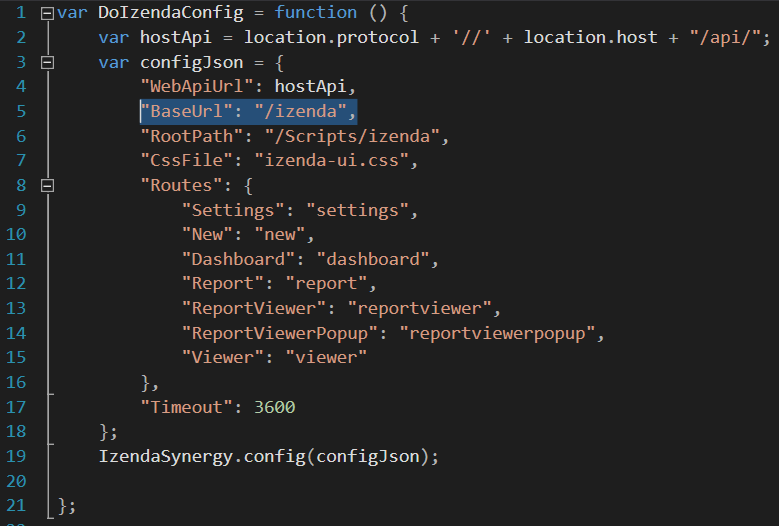
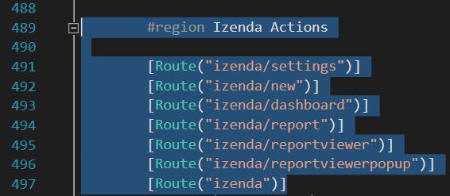

White Labeling URLs¶
By default, the MVC Kit labels URLs with an Izenda namespace for you to modify.
When you navigate to your Report List for instance, your URL will look similar to the following:
http://localhost:14809/Home/Reports#?source=%2Fizenda%2Freport
To modify this namespace, update the files below:
In this example, we change ‘izenda’ to ‘reporting’.
Scripts\izenda.integrate.js:
"BaseUrl": "/reporting",
Fig. 389 izenda.integrate.js
HomeController.cs:
Update the appropriate routes in the controller
#region Izenda Actions [Route("reporting/settings")] [Route("reporting/new")] [Route("reporting/dashboard")] [Route("reporting/report")] [Route("reporting/reportviewer")] [Route("reporting/reportviewerpopup")] [Route("reporting")] public ActionResult Izenda() { return View(); }
Fig. 390 HomeController.cs